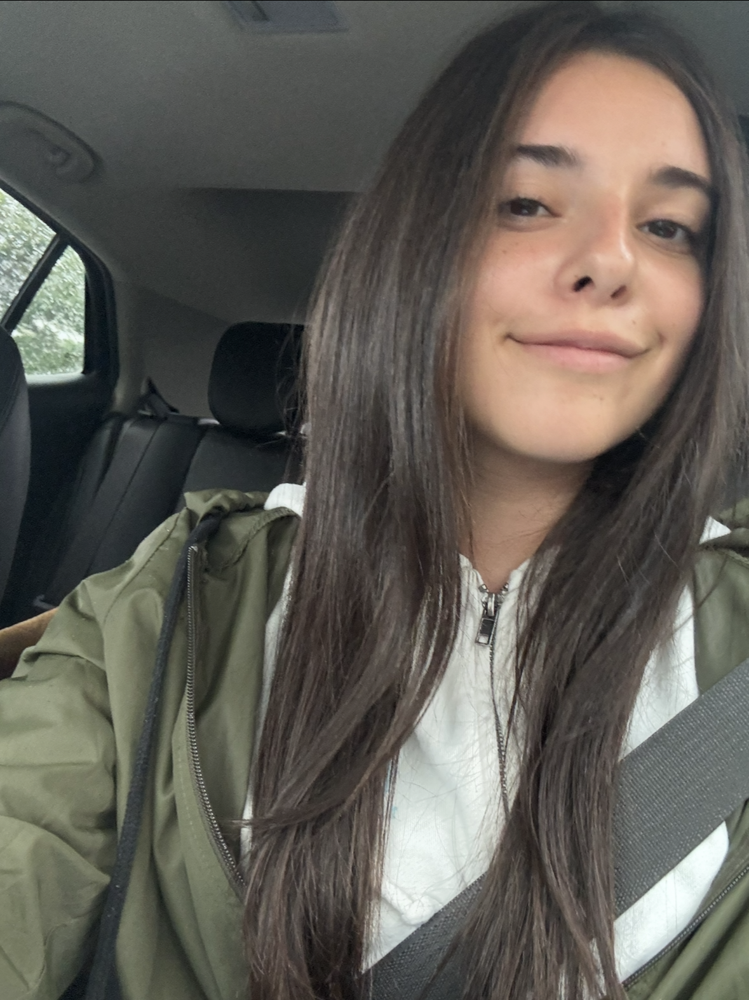
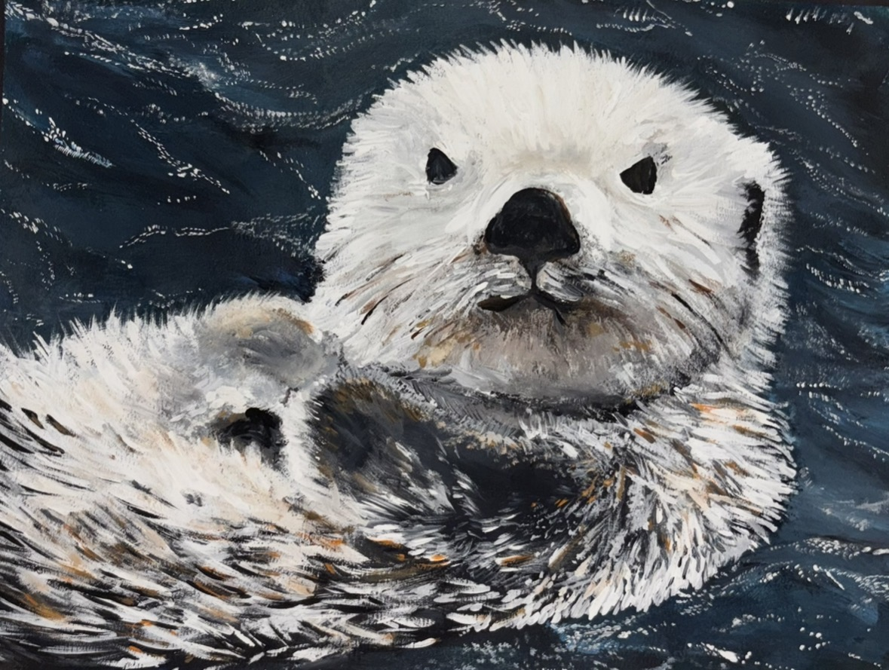

My name is Aden Fischoff, and I am from New York. I am currently a sophomore at NYU Gallatin, where I am designing an interdisciplinary concentration focused on marketing, advertising, consumer behavior, and user experience design. Through these areas, I hope to better understand how people interact with brands, products, and digital experiences.
Some of my interests include gardening, dancing, and various forms of visual art, such as painting.


Personal Photo (photo on top).
This acrylic painting of a sea otter was inspired by multiple wildlife reference images. It was completed in June 2023 and remains one of my favorite pieces that I have created. If you would like to explore more of my artwork, you can view my art portfolio below.